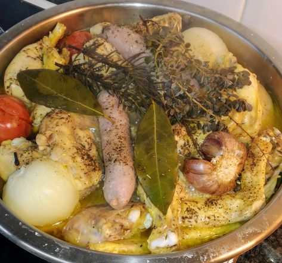

100 ideas de Almuerzos | comida, recetas de comida, recetas para cocinar
- Las mejores 98 ideas de Almuerzos deliciosos en 2021 .
- 19 recetas fáciles de almuerzos saludables para no subir de .
- 12 Recetas de arroz deliciosas y fáciles de preparar - Recetinas
- 100 ideas de Almuerzos | comida, recetas de comida, recetas .
- Recetas de almuerzos deliciosos | Alpina Colombia
- Almuerzos Saludables: Rápidos, Fáciles, Caseros y Ricos
Hacer tiempo un saludable puede ayudarnos a llevar mejor el día . PUERROS VINAGRETA . - 20 ALMUERZOS FACILES Y RAPIDOS de hacer en casa
- 30 recetas de pollo fáciles que siempre salen bien - El Español
- Recetas para Almuerzos | Tastemade
- 15 recetas fáciles con huevo - Kiwilimón
almuerzos
Collection by Flor Rivera
107 Pins • 12 Followers 0:42 Slow Cooker Recipes Crockpot Recipes Cooking Recipes Slow Cooker Ribs Easy Slow Cooker Ribs Recipe Chicken Recipes Slow Cooker Steak Pork Rib Recipes Healthy RecipesSlow Cooker Ribs Recipe by Tasty
· 1650 reviews ·Slow Cooker BBQ Pork Ribs
1:04 Mexican Cooking Mexican Food Recipes Dessert Recipes Vegetarian Recipes Tasty Videos Food Videos Nopales Recipe Buzzfeed Tasty Mexican DishesVideo de Mixiotes de Pollo
· 64 reviews · 4 hours ·Los mixiotes son un platillo típico de México, generalmente de carne enchilada y cocinados al vapor. Esta receta de mixiotes de pollo te encantará por su tradicional sabor a especias y aroma que desprende a la hora de abrirlos.
Sauce Recipes New Recipes Cooking Recipes Favorite Recipes Healthy Recipes Authentic Salsa Verde Recipe Easy Salsa Verde Recipe Chutneys Mexican DishesHomemade Authentic Salsa Verde Recipe
This salsa verde recipe, or green salsa recipe, also known as tomatillo salsa, is fast and easy and made like in Mexico. Recipe with photos and video.
Veggie Recipes Mexican Food Recipes Vegetarian Recipes Cooking Recipes Healthy Recipes Deli Food Good Food Yummy Food Food PornAlbóndigas Vegetarianas de Calabaza
· 7 reviews · 2.5 hours ·Si te gustan mucho las albóndigas, solo que no quieres comer carne, te presentamos una excelente alternativa, son las ricas albóndigas vegetarianas de calabaza. Es un platillo muy sabroso y sencillo de preparar.
Veggie Recipes Vegetarian Recipes Healthy Recipes Healthy Cooking Healthy Eating Cooking Recipes Deli Food Going Vegan Love FoodAlbóndigas de brócoli. Receta vegetariana
Receta de albóndigas de brócoli. Receta con fotografías del paso a paso y recomendaciones de degustación. Recetas vegetarianas
Crockpot Dishes Crock Pot Slow Cooker Crock Pot Cooking Pork Dishes Slow Cooker Recipes Cooking Recipes Crock Pot Ham Cooking Games Crockpot MealsCrock Pot Ham (Video) {Easy Holiday Meal!} - Spend With Pennies
Crock Pot ham takes only about 5 minutes to prepare and cooks to tender perfection in the slow cooker. This is the perfect holiday ham recipe but easy enough to make any day of the week!
Slow Cooker Corn Chowder Bacon Corn Chowder Slow Cooker Bacon Crock Pot Slow Cooker Crock Pot Soup Slow Cooker Recipes Crockpot Recipes Cooking Recipes Crockpot DishesSlow Cooker Bacon Corn Chowder recipe
Slow Cooker Bacon Corn Chowder recipe! This delicious hearty chowder is so easy to make and is perfect for a cold day!
Vegetarian Recipes Cooking Recipes Healthy Recipes Avocado Recipes Avacado Meals Avocado Food Kale Recipes Cooking Bacon Cooking TipsAvocado Pasta
· 211 reviews · 20 minutes ·The easiest, most unbelievably creamy avocado pasta. And it’ll be on your dinner table in just 20 min!
Tortillas Tapas Argentine Recipes Argentina Food Salty Foods Quiches Mexican Food Recipes Love Food FrittataTortilla de papas al horno facil
Como hace Tortilla de papas al horno facil, rapida y saludable. Tortilla de papas basica con huevo al horno rapida. Receta de Tortilla de papas al horno facil.
Authentic Mexican Recipes Mexican Food Recipes Real Mexican Food Mexican Cooking Food Porn Cooking Recipes Healthy Recipes Mexican Dishes International RecipesEnchiladas Suizas Picositas
Las mejores recetas de cocina - kiwilimon
Overnight Breakfast Casserole Breakfast Crockpot Recipes Breakfast Bake Breakfast Dishes Brunch Recipes Casserole Recipes Cooking Recipes Egg Casserole Brunch FoodsOvernight Breakfast Casserole {with Bacon} - Spend With Pennies
Overnight Breakfast Casserole with Bacon! Wifesaver Breakfast is a great make ahead casserole! Perfect for holidays (it can be made with sausage or ham too). In this recipe, cheese, bacon, bell peppers and green onions are layered with bread and soaked in a seasoned egg mixture.
Best Mexican Recipes Great Recipes Favorite Recipes Mexico Food Mexican Cooking Latin Food Food Trends Mexican Dishes The BestChiles Rellenos de Queso en Caldillo de Tomate
· 16 reviews · 40 minutes ·Esta deliciosa receta de chiles rellenos de queso es un platillo típico de México, tienes que probarlos. Los tradicionales son con queso pero puedes rellenarlos con atún, frijoles o cambiar el queso de tu elección.
Turkey Recipes Lunch Recipes Great Recipes Chicken Recipes Dinner Recipes Cooking Recipes Favorite Recipes Healthy Recipes Chicken MealsCreamy Spinach and Artichoke Chicken - Spend With Pennies
This creamy spinach and artichoke chicken is a quick and easy meal of seared chicken breasts in a simple yet flavor packed sauce.
Authentic Mexican Recipes Mexican Food Recipes Real Mexican Food Mexican Cooking Food Porn Cooking Recipes Healthy Recipes Mexican Dishes International RecipesEnchiladas Suizas Picositas
· 82 reviews · 90 minutes ·¿Ya sabes qué cocinar en el siguiente desayuno? Estas Enchiladas Suizas Picositas con queso manchego gratinadas son la mejor receta. Puedes preparar la salsa verde tan picosa como tú quieras y agregar antes de servir un poco de aguacate. Para gratinar las Enchiladas Suizas Picositas puedes usar un horno eléctrico o un horno de gas, el que sea más cómodo para ti. Las tortillas para hacer las enchiladas puedes hacerlas a mano para que estén más frescas, aunque tardarás más en la elaboración…
Ham Salad Recipes Chicken Recipes Healthy Recipes Healthy Food Salade Healthy Fancy Salads Le Chef Soup And Salad My Favorite FoodEnsalada Cremosa de Pollo, Papa y Manzana
Las mejores recetas de cocina - kiwilimon
Veggie Recipes Vegetarian Recipes Cooking Recipes Healthy Recipes Tapas Aperitivos Finger Food Comida Diy Food Porn Good FoodCocinando Entre Olivos - Un blog sobre cocina de Ana María Gutiérrez
Un blog sobre cocina de Ana María Gutiérrez
Privacy

Mauris vulputate dolor
Rutrum fermentum nibh in augue praesent urna congue rutrum.
Etiam posuere